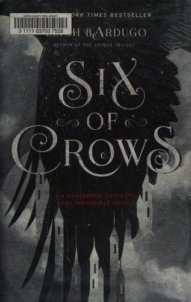
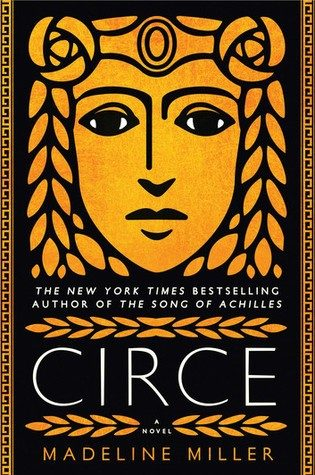
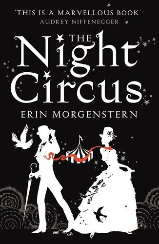
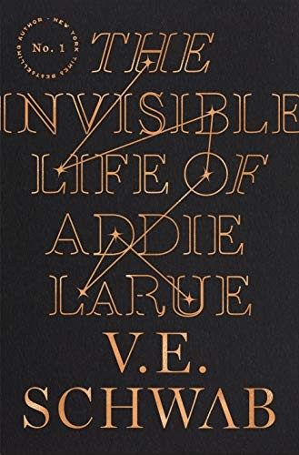

1.
The Hobbit
by J.R.R. Tolkien
The adventure that started modern fantasy: a reluctant hero, a dragon and a long road home.
New to fantasy or looking for your next favorite world? These picks cover epic fantasy, heists, cozy fantasy and mythology, so there's a door in for every kind of reader.
The adventure that started modern fantasy: a reluctant hero, a dragon and a long road home.

A legendary hero tells his own story, from street orphan to the university of magic.

A heist crew plans to overthrow an immortal emperor. Clever magic system, big twists.
A huge, rewarding epic about soldiers, scholars and storms. Perfect for long reading sessions.

Six outcasts attempt an impossible heist. Fast, funny and full of found family.
A gang of con artists in a Venice-like city gets in way over their heads.
Audible usually gives new members a free trial: pick an audiobook with your credit and keep it, even if you cancel before the trial ends. Kindle Unlimited also has a free trial with thousands of romantasy and romance titles included.
Try Audible free (paid link) Try Kindle Unlimited (paid link)A standalone epic with dragons, queens and an ancient evil rising.

The witch of Greek myth tells her own story. Beautiful, quiet and powerful.

A magical circus that opens only at night hides a duel between two young magicians.

An orc retires from adventuring to open a coffee shop. The book that made cozy fantasy a genre.

A caseworker visits an orphanage of magical children. Warm, funny and kind.

A woman cursed to be forgotten by everyone she meets, until one day she isn't.
Audible usually gives new members a free trial: pick an audiobook with your credit and keep it, even if you cancel before the trial ends. Kindle Unlimited also has a free trial with thousands of romantasy and romance titles included.
Try Audible free (paid link) Try Kindle Unlimited (paid link)